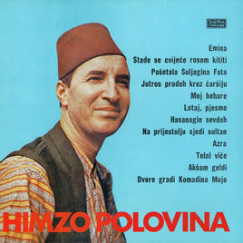

Sevdalinke
~Priče kroz pjesmu~
Sevdalinka je tradicionalna gradska pjesma Bosne i Hercegovine. Prepoznatljiva je po izražajnom pjevanju, bogatoj melodiji i stihovima o ljubavi, čežnji i svakodnevnom životu.
Istraži sevdalinke →Mostar Sevdah Reunion
O sevdalinci
Šta daje pjesmi njen karakter?
Sevdalinka povezuje poeziju i muziku. Isti stihovi mogu zvučati drugačije zavisno od glasa, pratnje i načina na koji ih izvođač otpjeva.
Glas
Pjevač ne mora svaku riječ otpjevati jednako dugo. Produžen ton, ukras ili kratka pauza mogu promijeniti osjećaj cijelog stiha.
Upoznaj izvođače →
Stihovi
U pjesmama se susreću ljubav, rastanak, porodica i zavičaj. Sačuvani su i stari izrazi koji govore o životu vremena u kojem su pjesme nastajale.
Pročitaj tekstove →Pratnja
Sevdalinka se može pjevati bez instrumenata, uz saz, harmoniku ili orkestar. Pratnja podržava glas i ispunjava prostor između stihova.
Uloga harmonike →Sevdah i njegovi gradovi
Mjesta koja
pjesme pamte
Od Vrbasa do Neretve, od Plive do Drine. Na karti izaberi grad, pogledaj fotografiju i poslušaj pjesmu koja ga spominje.
Otvori kartu sevdaha →

Izdvojena pjesma
Počni od „Emine“
Stihovi Alekse Šantića i glas Himze Polovine jedan su od poznatih spojeva poezije i sevdaha. „Emina“ je ostala važan dio Himzinog repertoara, ali i muzičkog sjećanja na Mostar.
Na stranici o Himzi možeš pročitati više o njegovom životu i radu, a u zbirci pronaći Šantićev tekst pjesme.